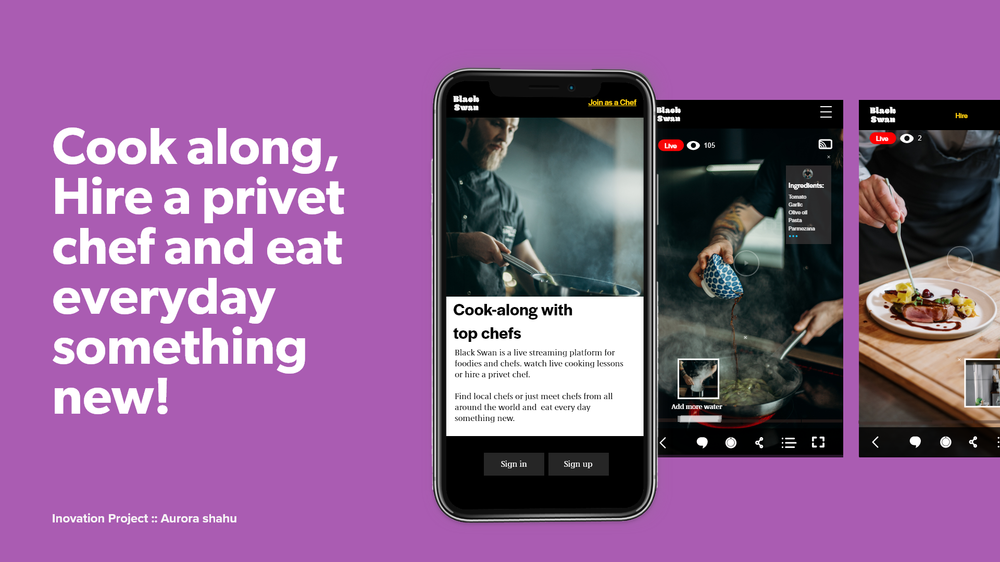
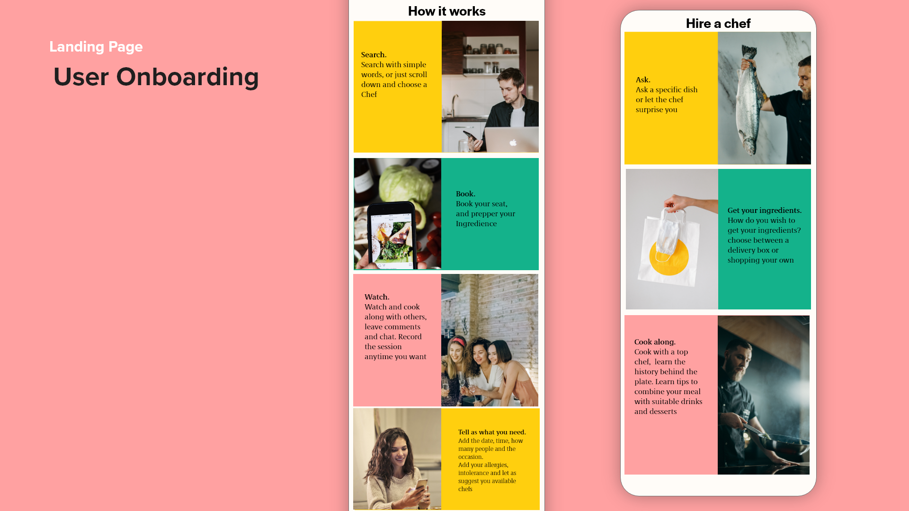
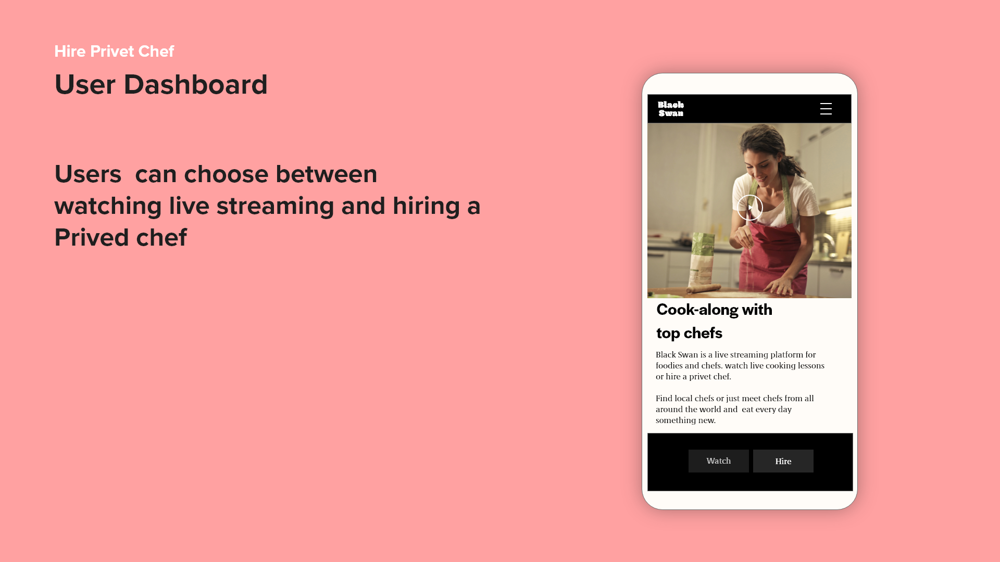
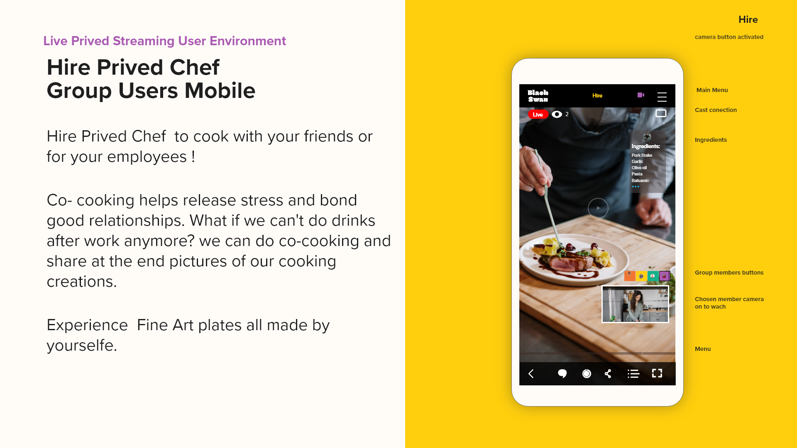
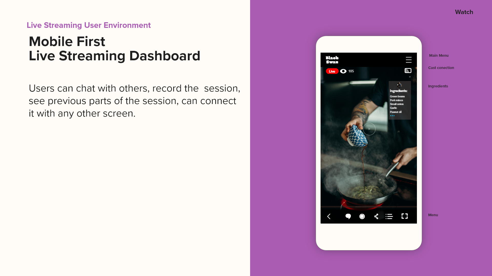
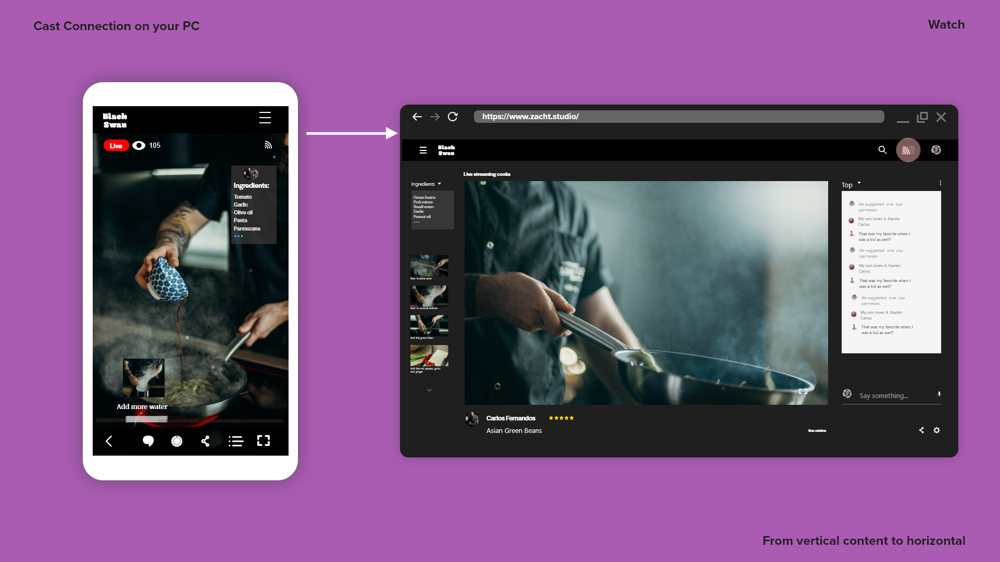
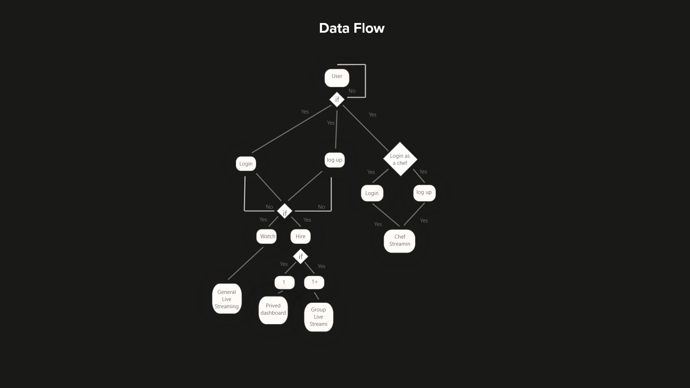
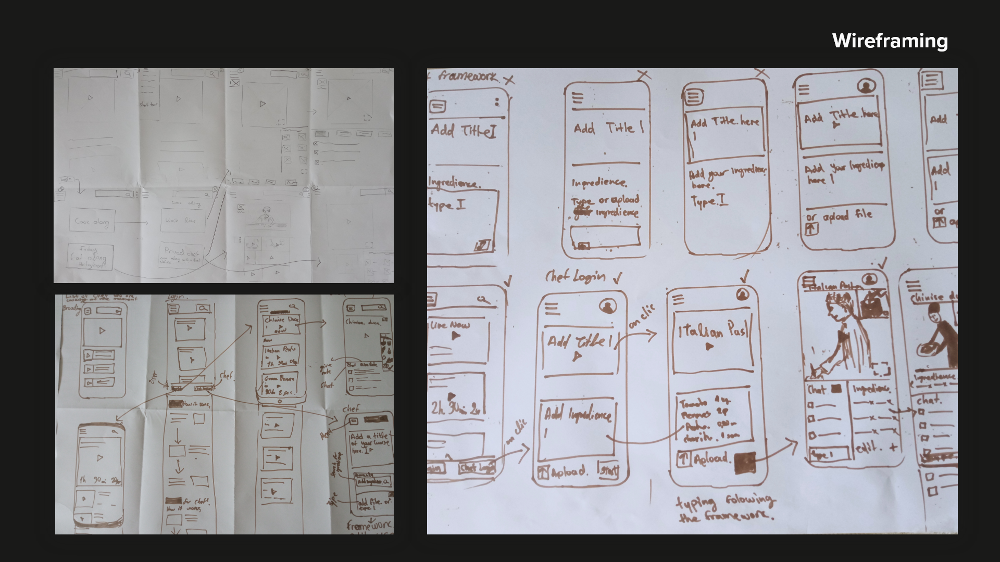

BlackSwan - designed by Aurora

innovative idea and design

Onboarding process

User Dashboard

Hire a private Chef for a virual live tutorial cook along!

Live streaming at a glance

cross platform application

efficient data flow

Iteration and design process